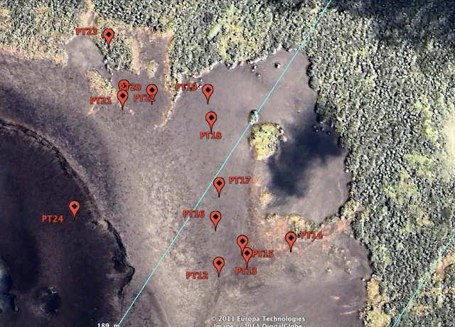
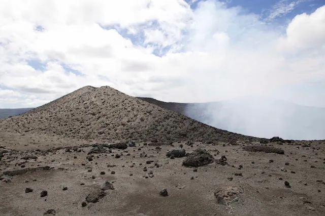

Ca y est, nous avons atterri sur l'île hier, après un vol magnifique entre les îles du Vanuatu !
Demain, nous redécollerons pour survoler enfin le Yasur avec le Lake Buccaneer, que nous avons loué et utiliserons pour la photographie oblique.
Afin de préparer le vol, nous avons passé la journée à marquer avec des plots très visibles et à enregistrer la position précise des points identifiés en rouge, les clous d'arpenteur, qui se situent sur le flanc est du volcan. Ceux-ci nous serviront à recaler les photos aériennes avec précision dans le référentiel terrestre.

Pour cela, il a fallu arpenter le volcan à pieds... or ce dernier est toujours très actif ! Vous voyez la taille des projections ? Il en tombe des comme ça (la taille varie entre 1 poing et 1 camion de pompier) en continu, c'est vraiment impressionnant et terrifiant ! Pour réussir, plusieurs dangers à éviter :
- ne pas tomber dans le cratère du volcan
- ne pas tomber sur la pente pleine de bombes volcaniques brulantes
- être très rapide et respirer le moins possible, car le gaz SO2 en grande quantité qui sortait du cratère est très toxique

Difficile de garder son calme !